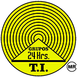

15 de Junio de 1975.- Se lleva a cabo la primera junta de nuestro movimiento dando nacimiento al primer Grupo 24 Horas, nuestro Cofundador el Lic. Guillermo Magaña Reyes y sus ahijados Virgilio A. y otros compañeros más del Grupo Hamburgo que siguieron el ejemplo. Junio de 1976.- Se Invita a Louis, esposa de Bill W a visitar nuestro Grupo en México, se le obsequia un juego de té con las insignias de nuestro grupo (Actualmente se encuentra en exhibición en la casa de Bill W en su Vitrina principal). Enero de 1977.- El Lic. Guillermo Magaña se entrevista con el Presidente José López Portillo, solicitando la difusión masiva de nuestro movimiento haciendo de obsequio la silla de montar que perteneció a su padre quien fuera Gobernador del estado de Morelos (1923-1924) que a la vez había sido heredada por Emiliano Zapata. Septiembre de 1991.- Fallece nuestro Cofundador mejor conocido por todos como "Memo", sus restos yacen cubiertos con una lápida sencilla en el Panteón La Leona de Cuernavaca Morelos. 20 de Enero de 1993.- Se abre el primer Grupo 24 Horas de AA y TI en West Palm Beach Florida, USA. 24 y 25 de Junio de 1995.- Se lleva a cabo la XV Convención en Cancún, con participantes Internacionales, a partir de ese entonces nuestros eventos se convierten en eventos Internacionales. Junio de 1999.- Inicia el trabajo de esta Oficina para promover la NOM028. 13 de Julio de 2014.- Se lleva a cabo la 34 Convención Internacional en Chimalhuacán, Estado de México con una asistencia aproximada de 5,000 personas. 22 y 23 de Noviembre de 2014.- Se llevara a Cabo el 34 Congreso Nacional e Internacional de Grupos 24 Horas de AA y TI AC. 15 de Junio de 2015.- Nuestro movimiento cumple 40 años.
NOTA: Solicitamos humildemente su colaboración para ir agregando más datos históricos y asi enriquecer este apartado. Sugerencias en el siguiente correo electrónico: informatica@grupos24horas.org
EL OBJETIVO DE NUESTRA AGRUPACIÓN SE BASA EN NUESTRO ENUNCIADO
El compañero internado puede permanecer el tiempo que su familia o persona responsable lo autorice y podrá solicitar su salida en el momento que así lo desee, pero es altamente recomendable que sea cuando lo sugieran los responsables de la agrupación de acuerdo al proceso de recuperación de cada persona en particular.
RESPETO A LA INTEGRIDAD HUMANA
Dentro del albergue no hay golpes, maltratos, ni castigos, nos apegamos totalmente a la NOM-028-SSA2-2001 para la prevención, tratamiento y control de las adicciones.
SERVICIOS GRATUITOS
La persona usuaria de nuestros servicios y su familia no pagan en su ingreso, estancia ni en su egreso. En el enunciado de A.A. se dice: "Para ser miembro de A.A. no se pagan honorarios ni cuotas, nos mantenemos con nuestras propias contribuciones". El Carácter fundamental de la comunidad es espiritual y no material. - Albergue Mixto - Dormitorios Separados - Baños Separados - Comedor - Cocina - Servicio Medico Externo - Terapia Ocupacional - Terapia Grupal - Terapia Personal.
Los grupos de A.A. que tenemos pintada en nuestra fachada el logotipo del circulo amarillo con círculos concéntricos negros y un triangulo al centro, pertenecemos al movimiento 24 Horas de Alcohólicos Anónimos y Terapia Intensiva y trabajamos con los Tres Lineamientos enunciados arriba. Somos custodios y garantes de los mismos, cada grupo debe de exhibir una cartulina vigente con la certificación NOM-028.
Toda persona puede estar segura de que en los grupos del movimiento se apegan a esta forma de trabajo, en esta misma página se encuentra un directorio nacional de las agrupaciones pertenecientes a la oficina central de Grupos de A.A. 24 Horas y Terapia Intensiva con más de 39 años de experiencia y más de 400 afiliados en todo el país.
EL OBJETIVO DE NUESTRA AGRUPACIÓN SE BASA EN NUESTRO ENUNCIADO
Alcohólicos Anónimos es una comunidad de hombres y mujeres que comparten su mutua experiencia, fortaleza y esperanza para resolver su problema común y ayudar a otros a recuperarse del alcoholismo. El único requisito para ser miembro de A.A. es el deseo de dejar la bebida. Para ser miembro de A.A. no se pagan honorarios ni cuotas; nos mantenemos con nuestras propias contribuciones. A.A. no está afiliada a ninguna secta, religión, partido político, organización o institución alguna; no desea intervenir en controversias; no respalda ni se opone a ninguna causa. “Nuestro objetivo primordial es mantenernos sobrios y ayudar a otros alcohólicos a alcanzar el estado de sobriedad."